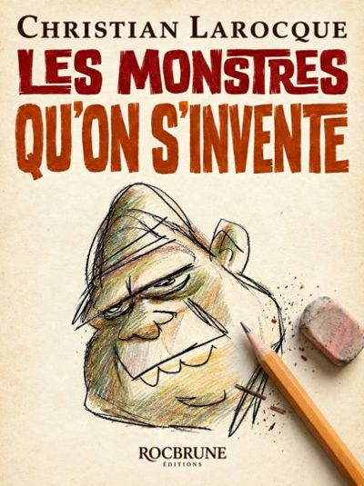
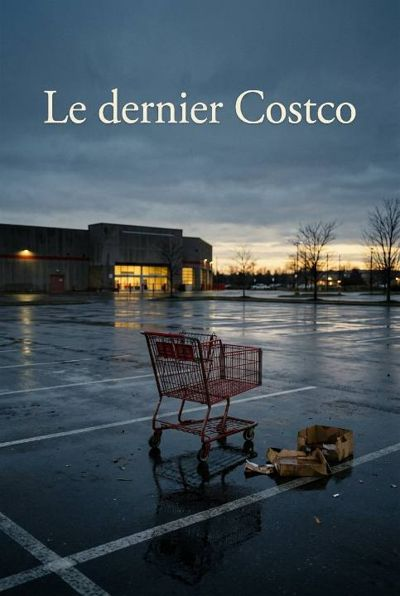

Les Monstres qu'on s'invente
Un père, une famille, pis toutes les affaires qu'on aime mieux pas nommer.
Les Monstres qu'on s'invente
Cinquante et un ans, le dessus du crâne en retraite anticipée, Christian passe ses journées à faire danser des carottes pis ses soirées sur YouTube, à regarder des gars chercher le Sasquatch avec une lampe frontale. Le jour où son fils Tristan est retenu par la GRC, une phrase de la lettre lui reste dans la gorge : un agent va venir vérifier les « activités en ligne » des proches.
Pendant cinq semaines, entre le forum, l'agent Lavoie qui s'excuse tout le temps, un test physique raté par douze secondes pis un service à l'auto du Tim Hortons, Christian va finir par comprendre que le monstre le plus dur à voir, c'est pas celui dans le bois. C'est celui qu'on cache autour de la table.
— Un grand café. Pis j'ai été renvoyé.
Rien dans le haut-parleur. Dans le Ram, Tristan a arrêté de jouer avec le velcro de son soulier.— Prologue
Le dernier Costco
Trente jours avant de quitter Barrhaven pour un bungalow sans marches à L'Ange-Gardien, Caroline demande à Christian de venir au Costco un jeudi matin. Elle veut des boîtes. Pis, au fond du magasin, il y a six quadriporteurs rouges branchés au mur.
Treize marches entre la cuisine pis la chambre, dix-huit ans de sclérose en plaques qu'on appelle « la jambe » ou « la fatigue », pis un mari qui a toujours le bon dépliant au mauvais moment. Jeudi après jeudi, entre le monsieur du fromage pis les hot-dogs, Christian va apprendre à s'asseoir. Littéralement.
Caroline m'a demandé de venir au Costco le lundi, en pliant des serviettes, sans me regarder, comme on demande à quelqu'un de tenir l'échelle.— Chapitre 1, Jeudi
📌 Dans quel ordre les lire?
Chaque livre se lit tout seul. L'ordre, c'est ma suggestion : le Costco parle pas de l'histoire de la GRC, alors c'est à toi de confirmer.